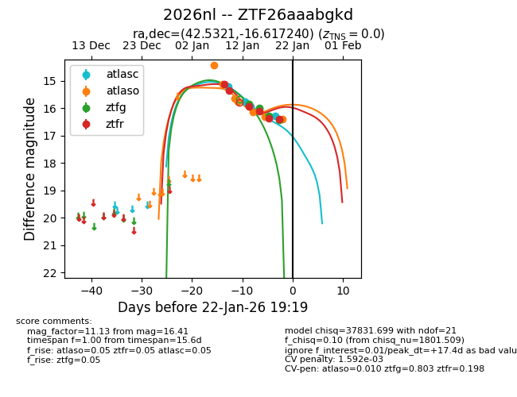
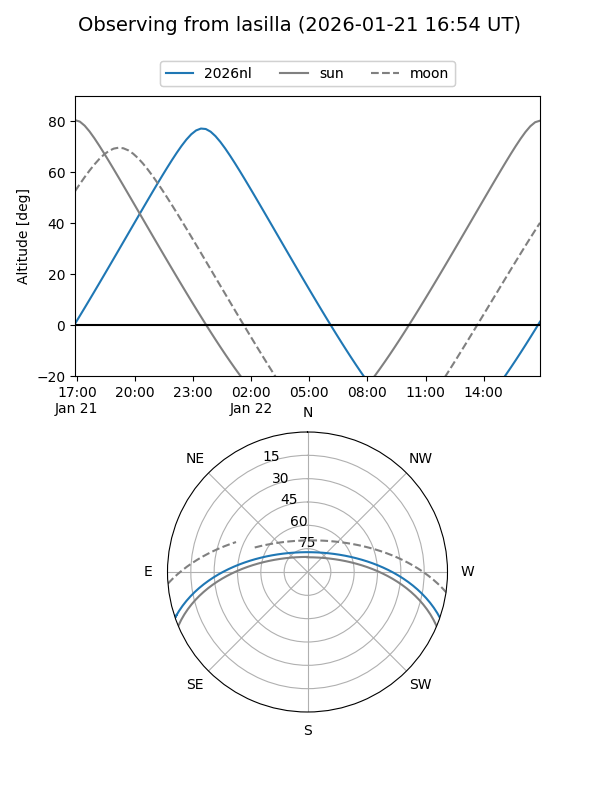

2026nl
Target 2026nl at 2026-01-17 17:50
Aliases and brokers:
FINK: link
Lasair: link
ALeRCE: link
TNS: link
YSE: link
alt names
ZTF26aaabgkd (ztf,fink_ztf)
2026nl (tns,yse)
Coordinates:
equatorial (ra, dec) = 42.5321,-16.61724
equatorial (HMS+DMS) = 02:50:07.71,-16:37:02.06
galactic (l, b) = (198.1552,-60.62032)
Flags:
likely cv
Photometry:
last atlasc=15.92, atlaso=16.12, ztfg=16.00, ztfr=16.11
3 atlasc, 5 atlaso, 2 ztfg, 4 ztfr detections
Lightcurve

Visibility


Additional plots